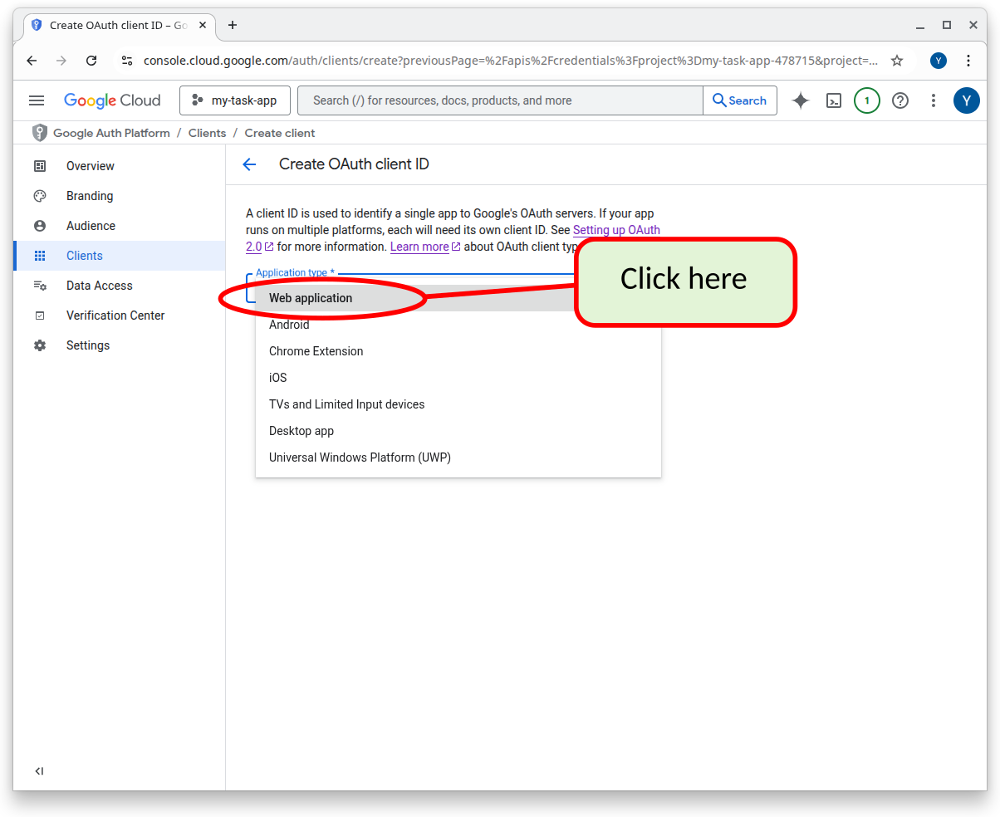

21 18. Step 6: setup authentication (Google OAuth)
Click the screenshots on this page to make them larger.
This step connects your Supabase project with Google’s OAuth 2.0 service so users can log in using their Google accounts.
OAuth stands for “Open Authentication”. It is a standard that website owners can use to integrate with 3rd party services, such as Google, Github, etc, so that the users of the website can use their Google/Github/etc password to login.
From the perspective of our website, task-app, the code to do all this is run on the Supabase Servers. Therefore we will have to configure the Supabase Servers with the info necessary to make this happen.
In addition will will need to setup a Google Cloud Project here: https://console.cloud.google.com/. This is where you will need to setup Google to recognize your app and allow your users to login using their google accounts.
See this page for more information about setting up Google’s OAuth 2.0 service. https://developers.google.com/identity/protocols/oauth2/
21.1 Create a Google Cloud Project
Go to https://console.cloud.google.com/ and login with your google userid and password. Then click “select a project”.
Click Create Project and give it a clear name
Enter a name for your project and click the create button.

Navigate to APIs & Services → Credentials.
Click Create Credentials → OAuth client ID to start generating keys.

{kind=link}
{kind=link}
{kind=link}
{kind=link}
21.2 Configure the OAuth Consent Screen
Continue as shown below or start again from APIs & Services → OAuth consent screen.
This step can be accomplished in one of two ways. Read the following “Notes”. ::: {.callout-note} If you followed all of the above steps, you should see the following screen. Click as shown below. (However, if you took a break from what you were doing you can continue by going to back to https://console.cloud.google.com/ and clicking on APIs & Services as shown in the next NOTE. :::
NoteIf you took a break and came back, or you got lost, you can continue by going to back to https://console.cloud.google.com/ and clicking on APIs & Services as shown below.
Add your basic app info:
App name
User support email
Under “Audience” choose External
This will allow you app to be viewed from anywhere in the world. However, your app must undergo review by Google before being allowed to use Google OAuth2 externally. Until then you can setup “test users” with google accounts. Only the specified “test users” will be allowed to “sign in with google” until your app has been reviewed by Google.
You will setup the test users laters.
NOTE: You can only choose “Internal” if you’ve setup an organization with Google.
Under Authorized domains, add the domain used by your Supabase project.
Under “Contact Information” specify an email address for Google to contact you for technical issues.
Save and continue through the remaining steps.
{kind=link}
{kind=link}
{kind=link}
{kind=link}
{kind=link}
21.3 Get Your OAuth Credentials
Return to APIs & Services → Credentials.
Click as below to create an OAuth 2.0 Client ID.

Choose Web application as the application type.
 You need to give a name to the application (Web client 1” in the screenshot below). This name is only used internal to the Google Cloud environment to refer to the application that you are setting up. This name will not appear anywhere to your users.
You then need to setup the URIs (i.e. URLs) that the Supabase servers will be contacted with from Google to indicate that the login was successful. You need to get this info from your Supabase configuration. This info was also saved in your .env.local file
Add your Supabase callback URL under Authorized redirect URIs:
https://[your-project-ref].supabase.co/auth/v1/callbackYou can get your-project-ref by doing one of the following:
logging into your Supabase account and getting this info from the Supabase settings.
You also can retreive it from the .env.local file that you had setup earlier. That file contained a line such as :
NEXT_PUBLIC_SUPABASE_URL=“https://dfdqbazsihcpsomfkyja.supabase.co”
In this example dfdqbazsihcpsomfkyja is your-project-ref. Therefore the Authorize redirect URI for this example is:
https://dfdqbazsihcpsomfkyja.supabase.co/auth/v1/callbackObviously you will have a different project-ref and therefore a slightly different URL.
Click “Create button”
After creation, copy your Client ID and Client Secret. You WILL NOT BE ABLE TO GET THESE CODES AGAIN FROM GOOGLE. Store these codes in a safe place. DO NOT store these code in any files that will be committed to git.
{kind=link}
{kind=link}
{kind=link}
21.4 Configure Google Auth in Supabase
- Open your Supabase dashboard.
- Navigate to Authentication → Providers.
- Select Google.
- Paste your Client ID and Client Secret.
- Click Save to enable Google login for your project.
With this configuration complete, Supabase can now handle secure login flows using Google OAuth.